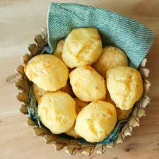

Brazilian Pão de Queijo (Cheese Bread)

Description
Pão de Queijo, or Brazilian Cheese Bread, is a tapioca flour
based bread made with parmesean cheese. Because it uses tapioca flour,
it is also completely Gluten free!
Brazilian Cheese Bread is crunchy on the outside with a soft, gooey, and
cheesey inside. It is the national snack of Brazil.
Ingredients
- 4 cups tapioca flour
- 1 1/4 cups milk
- 1/2 cup water
- 6 tbsp oil
- 1 1/2 cups grated parmesean
- 1 cup shredded mozzarella
- 2 large eggs
Instructions
- Preheat oven to 400F degrees with a rack in the middle.
- Combine the milk, water, oil and salt in a saucepan and bring
to a boil over medium high heat.
- Add the tapioca flour to the bowl of a stand mixer and,
once the milk mixture boils, pour it over the flour.
Turn the mixer on and mix it well. The texture will be fondant-like,
really white and sticky.
- With the mixer still on, add the eggs, one at a time. You will think
they won't mix, since the tapioca flour mixture is so sticky,
but hang in there cause they will.
- Once the eggs are incorporated, add the cheese, a little at a time,
until fully incorporated.
- The dough is supposed to be soft and sticky. However, if you're
worried it's too liquidy, add some more tapioca flour. Just don't overdo
it or your cheese bread will be tough and not too gooey.
- To shape the balls, wet your hands with cold water and, using a spoon,
scoop some of the dough to shape balls that are a
little smaller than golf-sized.
- Place the balls on a baking sheet covered with parchment paper
and bring it to the preheat oven
- Bake for 15-20 minutes or until they are golden and puffed.